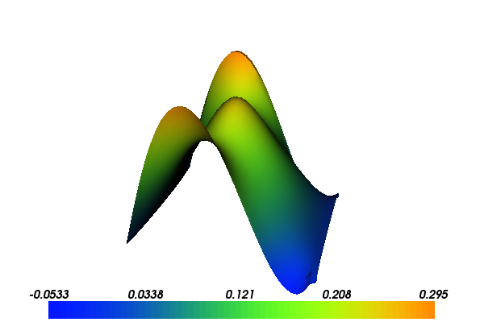

9. Mixed formulation for Poisson equation¶
This demo is implemented in a single Python file,
demo_mixed-poisson.py, which contains both the variational
forms and the solver.
This demo illustrates how to solve Poisson equation using a mixed (two-field) formulation. In particular, it illustrates how to
- Use mixed and non-continuous finite element spaces
- Set essential boundary conditions for subspaces and H(div) spaces
- Define a (vector-valued) expression using additional geometry information
9.1. Equation and problem definition¶
An alternative formulation of Poisson equation can be formulated by introducing an additional (vector) variable, namely the (negative) flux: \(\sigma = \nabla u\). The partial differential equations then read
with boundary conditions
The same equations arise in connection with flow in porous media, and are also referred to as Darcy flow.
After multiplying by test functions \(\tau\) and \(v\), integrating over the domain, and integrating the gradient term by parts, one obtains the following variational formulation: find \(\sigma \in \Sigma\) and \(v \in V\) satisfying
Here \(n\) denotes the outward pointing normal vector on the boundary. Looking at the variational form, we see that the boundary condition for the flux (\(\sigma \cdot n = g\)) is now an essential boundary condition (which should be enforced in the function space), while the other boundary condition (\(u = u_0\)) is a natural boundary condition (which should be applied to the variational form). Inserting the boundary conditions, this variational problem can be phrased in the general form: find \((\sigma, u) \in \Sigma_g \times V\) such that
where the variational forms \(a\) and \(L\) are defined as
and \(\Sigma_g = \{ \tau \in H({\rm div}) \text{ such that } \tau \cdot n|_{\Gamma_N} = g \}\) and \(V = L^2(\Omega)\).
To discretize the above formulation, two discrete function spaces \(\Sigma_h \subset \Sigma\) and \(V_h \subset V\) are needed to form a mixed function space \(\Sigma_h \times V_h\). A stable choice of finite element spaces is to let \(\Sigma_h\) be the Brezzi-Douglas-Marini elements of polynomial order \(k\) and let \(V_h\) be discontinuous elements of polynomial order \(k-1\).
We will use the same definitions of functions and boundaries as in the demo for Poisson’s equation. These are:
- \(\Omega = [0,1] \times [0,1]\) (a unit square)
- \(\Gamma_{D} = \{(0, y) \cup (1, y) \in \partial \Omega\}\)
- \(\Gamma_{N} = \{(x, 0) \cup (x, 1) \in \partial \Omega\}\)
- \(u_0 = 0\)
- \(g = \sin(5x)\) (flux)
- \(f = 10\exp(-((x - 0.5)^2 + (y - 0.5)^2) / 0.02)\) (source term)
With the above input the solution for \(u\) and \(\sigma\) will look as follows:
{kind=link}

9.2. Implementation¶
This demo is implemented in the demo_mixed-poisson.py
file.
First, the dolfin module is imported:
from dolfin import *
Then, we need to create a Mesh covering
the unit square. In this example, we will let the mesh consist of 32 x
32 squares with each square divided into two triangles:
# Create mesh
mesh = UnitSquareMesh(32, 32)
Next, we need to define the function spaces. We define the two function spaces \(\Sigma_h\) and \(V_h\) separately, before combining these into a mixed function space:
# Define function spaces and mixed (product) space
BDM = FunctionSpace(mesh, "BDM", 1)
DG = FunctionSpace(mesh, "DG", 0)
W = BDM * DG
The second argument to FunctionSpace specifies the type of
finite element family, while the third argument specifies the
polynomial degree. The UFL user manual contains a list of all
available finite element families and more details. The * operator
creates a mixed (product) space W from the two separate spaces
BDM and DG. Hence,
Next, we need to specify the trial functions (the unknowns) and the test functions on this space. This can be done as follows
# Define trial and test functions
(sigma, u) = TrialFunctions(W)
(tau, v) = TestFunctions(W)
In order to define the variational form, it only remains to define the source function \(f\). This is done just as for the Poisson demo:
# Define source function
f = Expression("10*exp(-(pow(x[0] - 0.5, 2) + pow(x[1] - 0.5, 2)) / 0.02)")
We are now ready to define the variational forms a and L. Since, \(u_0 = 0\) in this example, the boundary term on the right-hand side vanishes.
# Define variational form
a = (dot(sigma, tau) + div(tau)*u + div(sigma)*v)*dx
L = - f*v*dx
It only remains to prescribe the boundary condition for the
flux. Essential boundary conditions are specified through the class
DirichletBC which takes three
arguments: the function space the boundary condition is supposed to be
applied to, the data for the boundary condition, and the relevant part
of the boundary.
We want to apply the boundary condition to the first subspace of the
mixed space. Subspaces of a MixedFunctionSpace can be accessed
by the method sub. In our case,
this reads W.sub(0). (Do not use the separate space BDM as
this would mess up the numbering.)
Next, we need to construct the data for the boundary condition. An
essential boundary condition is handled by replacing degrees of
freedom by the degrees of freedom evaluated at the given data. The
\(BDM\) finite element spaces are vector-valued spaces and hence
the degrees of freedom act on vector-valued objects. The effect is
that the user is required to construct a \(G\) such that \(G
\cdot n = g\). Such a \(G\) can be constructed by letting \(G
= g n\). In particular, it can be created by subclassing the
Expression
class. Overloading the eval_cell method (instead of the usual
eval) allows us to extract more geometry information such as the
facet normals. Since this is a vector-valued expression, we also need
to overload the value_shape method.
# Define function G such that G \cdot n = g
class BoundarySource(Expression):
def __init__(self, mesh):
self.mesh = mesh
def eval_cell(self, values, x, ufc_cell):
cell = Cell(self.mesh, ufc_cell.index)
n = cell.normal(ufc_cell.local_facet)
g = sin(5*x[0])
values[0] = g*n[0]
values[1] = g*n[1]
def value_shape(self):
return (2,)
G = BoundarySource(mesh)
Specifying the relevant part of the boundary can be done as for the Poisson demo (but now the top and bottom of the unit square is the essential boundary):
# Define essential boundary
def boundary(x):
return x[1] < DOLFIN_EPS or x[1] > 1.0 - DOLFIN_EPS
Now, all the pieces are in place for the construction of the essential boundary condition:
bc = DirichletBC(W.sub(0), G, boundary)
To compute the solution we use the bilinear and linear forms, and the
boundary condition, but we also need to create a Function to store the solution(s). The
(full) solution will be stored in the w, which we initialise using
the FunctionSpace W. The actual
computation is performed by calling solve. The separate components sigma and
u of the solution can be extracted by calling the split function. Finally, we plot
the solutions to examine the result.
# Compute solution
w = Function(W)
solve(a == L, w, bc)
(sigma, u) = w.split()
# Plot sigma and u
plot(sigma)
plot(u)
interactive()
9.3. Complete code¶
from dolfin import *
# Create mesh
mesh = UnitSquareMesh(32, 32)
# Define function spaces and mixed (product) space
BDM = FunctionSpace(mesh, "BDM", 1)
DG = FunctionSpace(mesh, "DG", 0)
W = BDM * DG
# Define trial and test functions
(sigma, u) = TrialFunctions(W)
(tau, v) = TestFunctions(W)
# Define source function
f = Expression("10*exp(-(pow(x[0] - 0.5, 2) + pow(x[1] - 0.5, 2)) / 0.02)")
# Define variational form
a = (dot(sigma, tau) + div(tau)*u + div(sigma)*v)*dx
L = - f*v*dx
# Define function G such that G \cdot n = g
class BoundarySource(Expression):
def __init__(self, mesh):
self.mesh = mesh
def eval_cell(self, values, x, ufc_cell):
cell = Cell(self.mesh, ufc_cell.index)
n = cell.normal(ufc_cell.local_facet)
g = sin(5*x[0])
values[0] = g*n[0]
values[1] = g*n[1]
def value_shape(self):
return (2,)
G = BoundarySource(mesh)
# Define essential boundary
def boundary(x):
return x[1] < DOLFIN_EPS or x[1] > 1.0 - DOLFIN_EPS
bc = DirichletBC(W.sub(0), G, boundary)
# Compute solution
w = Function(W)
solve(a == L, w, bc)
(sigma, u) = w.split()
# Plot sigma and u
plot(sigma)
plot(u)
interactive()